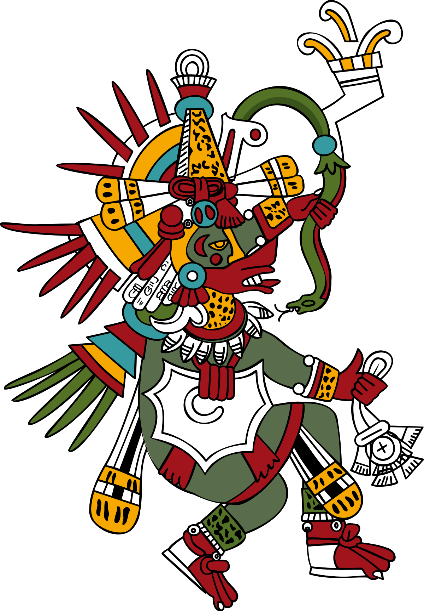
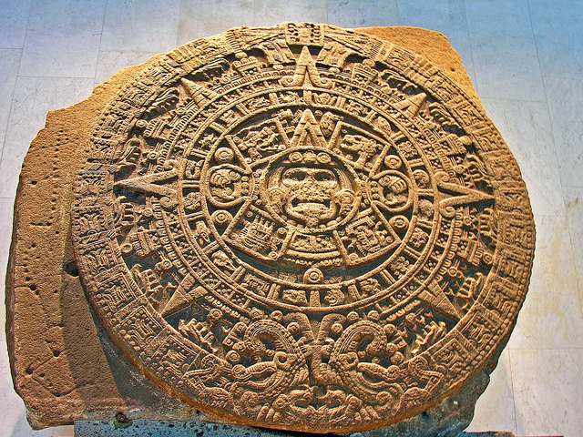
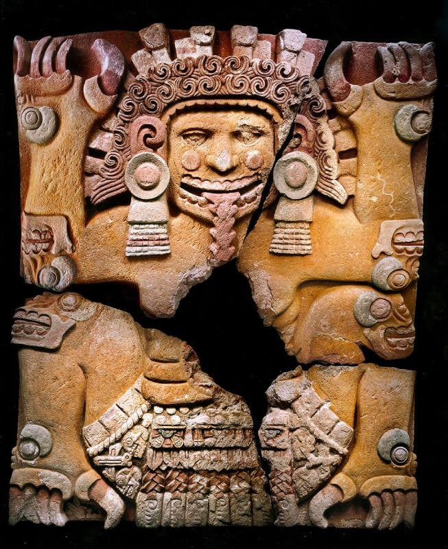
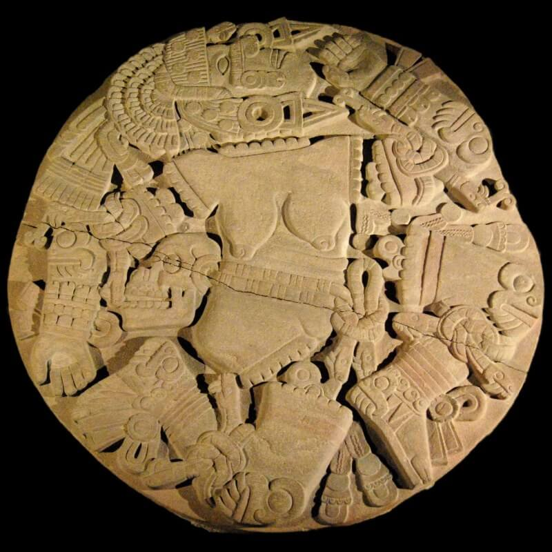

La mitología mexica es un conjunto de mitos y leyendas nahuas tradicionales del pueblo mexica o azteca. La realidad de la creación nahua es una extensión y complejo cultural desde antes de la llegada de los mexicas al Valle de México. Al asimilarse, éstos cambiaron sus propios dioses, intentando colocarlos al mismo nivel de los antiguos dioses del panteón.
Existe un culto dominante sobre los demás dioses aztecas: el de su dios del Sol y de la guerra, Huitzilopochtli. Los aztecas se consideraban como el pueblo elegido por el Sol, encargados de garantizar su recorrido por el cielo, alimentándolo. Este sentimiento fue reforzado por la reforma social y religiosa de Tlacaélel bajo el reino de los emperadores Itzcóatl, Moctezuma I y Axayácatl a mitad del siglo XV.
| DEIDADES | SERES | LUGARES |
|---|---|---|
| Ometecuhtli | Nahual | Mictlán |
| Quetzalcóatl | Camazotz | Aztlán |
| Atlacoya | Tlalocan | |
| Tláloc | Tonatiuhichan | |
| Coatlicue |
Quetzalcóatl es uno de los dioses más importantes de la cultura mesoamericana, entrañablemente amado por el pueblo, representa la dualidad inherente a la condición humana: la serpiente, que es cuerpo físico con sus limitaciones, y las plumas, que son los principios espirituales y del conocimiento. Primero hombre, luego dios, las distintas versiones sobre la leyenda de este personaje de rubia cabellera, barba espesa, frente despejada y mirada bondadosa explica el nacimiento del nombre de la montaña más alta de México: el Citlaltépetl o Cerro de la Estrella.
“La Serpiente Emplumada”, Quetzalcóatl, fue un rey tolteca de la ciudad de Tula, una de las grandes civilizaciones de mesoamérica y precursora de la cultura mexica. Quetzalcóatl fue un sacerdote sabio y progresista que enseñó a los pueblos el arte de la orfebrería, la agricultura, sobre todo el cultivo del Maíz, la escritura, la astronomía, prohibió los sacrificios humanos, reinó a través de la paz y se ganó la antipatía de los adoradores de Tezcatlipoca, “espejo negro que humea”. De hecho, fueron ellos quienes por medio de engaños hacen que se embriague y falte a su celibato, llevándolo a los placeres de la vida mundana. Debido a esto, Quetzalcóatl abdicó y partió exiliado, junto con sus discípulos, no sin antes haber prometido su regreso.
Quetzalcóatl salió de Tula, caminó por el altiplano y se despidió de sus discípulas las mariposas en Papalotla, cerca de Texcoco. Continuó hasta Coatepec, llegó al Cerro de las Culebras -desde donde se observa el Citlaltépetl (Cerro de la Estrella)-; allí, en la cima, se despidió de sus discípulos diciéndoles que de ahí en adelante tenía que seguir él solo, pero que “volvería cuando el quinto sol se dejara ver en el horizonte”.
Los discípulos le preguntaron: “Señor, ¿y cómo vamos a saber nosotros que ese quinto sol llega y que tu vuelves?”, a lo que Quetzalcóatl respondió: “les voy a dejar una señal”, y según cuenta la leyenda, Quetzalcóatl hizo unos ademanes mágicos de lo que surgió una erupción del Citlaltépetl que subió al cielo y se unió a la estrella Citlalit (Venus), misma que se tornó más luminosa. Entonces les dijo: “observen esa estrella, de hoy en adelante se llamará Tlahuixcalpantlecutli”, es decir, “Señor que anuncia la venida del Sol”.
La historia de la cultura mesoamericana, y en particular la del arte, tiene puntos en común. Las civilizaciones olmeca, maya, tolteca y zapoteca, entre otras, perpetuaron una tradición artística que mostraba su amor por la escultura monumental en piedra, la arquitectura imponente, la cerámica altamente decorada, los sellos geométricos para tejidos y arte corporal, y la impresionante orfebrería que se utilizaba para representar a personas, animales, plantas, dioses y elementos de las ceremonias religiosas, especialmente los ritos y deidades relacionados con la fertilidad y la agricultura.
El trabajo del metal era una habilidad particular de los aztecas. El gran artista renacentista Albrecht Drurer vio algunos de los artefactos que se llevaron a Europa, lo que le hizo decir: "...nunca he visto en todos mis días algo que regocije tanto mi corazón, como estas cosas. Porque vi entre ellas objetos artísticos asombrosos, y me maravillé del sutil ingenio de los hombres de estas tierras lejanas". Desgraciadamente, al igual que la mayoría de los artefactos, estos objetos fueron fundidos para obtener dinero, por lo que sobreviven muy pocos ejemplos de las habilidades de los aztecas para trabajar el metal en oro y plata. Se han descubierto objetos más pequeños, entre ellos labrets de oro (perforaciones en los labios), colgantes, anillos, pendientes y collares de oro que representan desde águilas hasta caparazones de tortuga y dioses, y que son testimonio de la destreza en la fundición a la cera perdida y el trabajo de filigrana de los mejores artesanos o toltecas.La Piedra del Sol Azteca (también conocida como la Piedra del Calendario) es una representación de las cinco épocas del sol de la mitología azteca. La piedra formaba parte del complejo arquitectónico del Templo Mayor de Tenochtitlán y data de c. 1427 d.C. La piedra basalto mide 3,58 metros de diámetro, mide 98 centímetros de grosor y pesa 25 toneladas. (Museo Nacional de Antropología, Ciudad de México).
Y para finalizar, este monolito, hallado en 2006, es considerado una deidad exclusiva para la clase sacerdotal y representa la habilidad que tenía una diosa para devorar a los difuntos.
Hoy en día, la cultura azteca es valorada tanto en México como en el mundo entero, no solo por las admirables esculturas, si no por el trasfondo de ellas y la aportación cultural y arqueológica que supone.
La palabra Coyolxauhqui significa “la que se adorna las mejillas con cascabeles” y fue descubierta en 1978. Esta escultura simboliza a la divinidad lunar y como se puede observar, este monolito pone de manifiesto a una diosa desnuda y desintegrada, debido a una derrota que tuvo con sus adversarios, en donde pretendía desprenderse de sus vestiduras.
